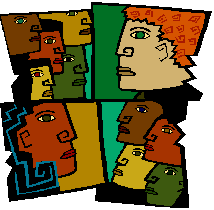
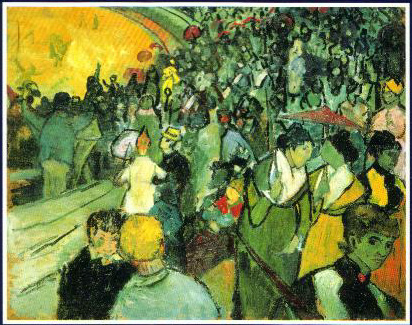

|
|
SOCIOLOGY
Subject
Guide to Library Resources
|
|
Sociology
is the scientific study of society, social groups, social
change, and the influences of human behavior in a social
context. Sociology tends to focus on industrialized societies,
human behavior in groups, how groups form, how they are
organized, how they interact and how they change.
The
discipline was founded by writings of John
Locke and other thinking men as far back as the seventeenth
century and continuing with the works of Karl
Marx, Emile
Durkheim, Max
Weber, George
Herbert Mead, W.E.B
Dubois and others. For more information on founding
sociologists see The
Dead Sociologist's Index.
|
|
|
| A
good place to start a paper is to read a little general literature
about the topic (encyclopedia, internet article) and look up
basic terms that are unfamiliar to you. Dictionaries or encyclopedias
can be found in the reference area of the library which specifically
deal with the areas of sociology and sociological research.
The Encyclopedia Britannica can also be found online.
The next step would be to look for books which cover or touch
upon your specific topic. Search through the chapter headings
and indexes of books that seem relevant to zero in on information
relating to your specific topic. |
Finally, look
for journal articles focused on your specific area of inquiry for
more in-depth and recent coverage.
When unable
to find answers to your questions in these resources, the internet,
bibliographies, and reference books will often give you new leads
to the answers. Finally, don't forget the wealth of information
contained in videos. Sociological research is particularly aided
by information documented in videos.
FIND
REFERENCE TOOLS
|
Reference
tools are generally found in a reference area where many
people can refer to general information. Items found in
Reference Areas cannot be checked out of the library.
Occasionally older copies of Reference items, or similar
items can be found in the circulating collection.
To
find articles and books on sociology and related fields,
the main printed index to use for extensive research on
a given topic is:
|
 |
Social
sciences index.
Location: LAC Index Table (Reference Room)
Call Number: AI3 .S62
(Previous
volumes known as Social Sciences & Humanities Index AI3
.R49)
Dictionaries for
Sociology can be found in the Reference Collections:
Dictionary
of sociology / Tony Lawson & Joan Garrod. 2001.
Location: LAC Reference Room Collection
Call Number: HM425 .L39 2001
A
modern dictionary of sociology [by] George A. Theodorson
and Achilles G. Theodorson. 1969
Location:
LAC Reference Room Collection
Call Number: HM17 .T5
Location:
PCC Reference Room Collection Call Number: HM17
.T5
Dictionary
of sociology / Henry Fairchild. 1970
Location: PCC Reference Room Collection
Call
Number: HM17 .F3 1970
A dictionary
of sociology / edited by Duncan Mitchell. 1968.
Location: PCC Reference Room Collection
Call
Number: HM17 .M56 1968b
|
|
Encyclopedias
for Sociology are also available:
|
Education and sociology: an encyclopedia / editors,
David L. Levinson, et al. 1976
Location: LAC Reference Room Collection
Call Number:
LC189.95 .E38 2002
The International encyclopedia of sociology / edited by Michael
Mann. 1984
Location: LAC Reference Room Collection
Call Number: HM17 .I53 1984
Encyclopedia of sociology / Edgar F. Borgatta. 2000
Location: LAC Reference Room Collection
Call Number: HM425 .E5 2000
Location: PCC
Reference Room Collection Call Number: HM425
.E5 2000 |
|
FIND
BOOKS IN THE CATALOG
|

|
Books
can be located by using a subject or keyword search in Voyager,
the Library's online catalog. Use the term sociology; or the
terms social or society along with another relevant keyword
from your topic. Also use your keywords to search the table
of contents and index of general texts on sociology.
To find Electronic
books in Voyager
which can be read online from home, try a search using general
terms and adding a Quick Limit of E-Books. You will need to
view the record for the book to click on the link to the website
that hosts the book. To view from home you will need passwords
which can be found with the passwords for online
databases available from the librarians.
Try a keyword search and look at the subject headings assigned
to some of your hits, then link to those subject headings
for more records. If you don't find records in the LBCC Library
for what you need, try searching online
databases for articles and search other
libraries for books. You may use Interlibrary
Loan to request books not found at LBCC.
|
More subject terms or keywords you might use to search the online
catalog or the Internet for your sociology research topic include
the following:
Collective
behavior
Community
Deviant behavior
Educational Sociology
Family
Individualism
Interpersonal relations
Marriage
Organizational Sociology
Personality and culture
Popular culture
Race relations
Religion and culture
Religion and sociology
Social anthropology
Social case work
Social change
Social classes
Social conflict
Social contract
Social equality
Social ethics |
Social evolution
Social groups
Social history
Social interaction
Social isolation
Social movements
Social perception
Social prediction
Social problems
Social psychology
Social Sciences–statistical methods
Social status
Social stratification
Social structure
Social systems
Socialization
Society, Primitive
Sociology
Statistics
Subculture
Technology and civilization
Urbanization
|
|
You can also
browse the shelves for books to check out by the Library of Congress
Classification letters assigned to books in these subject areas:
|
Find
these call numbers on Stack Level 3, 1st floor of LAC:
HM1-HM299 -- Sociology (General and Theoretical)
HN1-HN981-- Social history, social problems, social reform
HV6001-HV7221 -- Criminology
HQ1-HQ2039 -- The family, marriage, women
Find
these call numbers on Stack Level 2, Basement of LAC:
HA -- Statistics
|
FIND
VIDEOS
|
Some
videos may be found in the Library's collection on Voyager.
First select a Quick Limit of Videorecordings,
then do a keyword search on the the name of the topic,
society or social group, or the term sociology.
You
may also view videos inhouse from the Instructional Media
Collection. Search Medianet
for the term sociology.
|
|
FIND
ARTICLES
Periodical
titles currently held in the LAC Library with sociological articles
include:
|
American
Behavioral Scientist
American Demographics
American Journal of Economics and Sociology
American Journal of Sociology
American Sociological Review
Annual Review of Sociology
Archives of Sexual Behavior
Armed Forces & Society
Dissent
Economic Development and Cultural Change
|
Ethics
Families in Society
Generations
The Hastings Center Report
Health and Social Work
Human Organization
Human Relations
Human Rights Journal of Conflict Resolution
Journal of Social Psychology
Journal of Youth & Adolescence
Occupational Outlook Quarterly
Policy Practice of Public Human Services
Population Bulletin
Population Today
Profit
Public Health Reports
Research on Aging
Science and Society
Signs: Journal of Women in Culture & Society
Social Education
Social Forces
Social Policy
Social Problems
Social Psychology Quarterly
Social Research
Social Service Review
Social Work
Youth and Society |
The Library
has a subscription to several online
databases containing sociological articles or information. These
databases are particularly helpful in finding information as many
journals can be searched simultaneously by the keywords you select.
The full-text is then most often available online for printing or
sending to your email account. Some of these databases include:
|
|
Country
Watch
CQ Researcher
Encyclopaedia Britannica
Ethnic Newswatch
Facts on File On-Line
Matter of Fact
Newsbank
Opposing Viewpoints
Proquest
SIRS Government Reporter
SIRS Researcher
|
Only
current faculty, students or staff may use these databases. Ask
for passwords at the Reference Desk at either Library. The Librarians
can instruct you on using these article databases. There is a free
workshop offered for learning the ins and outs of
online database searching.
FIND
INTERNET RESOURCES
WRITING/RESEARCH
ASSISTANCE
|
Finally,
while you are writing your paper, there is an online subject
guide on Writing
Tips with links to online help for organizing and
formulating your paper, finding online dictionaries and
citation tools.
There is also a Writing Center at both campuses to help
you with the fundamentals of your paper, for information
call the Writing Center at LAC
(562) 938-4520 and at PCC:
(562) 938-3991.
|
|
Increase Your Research Skills!
Enroll for Lib1 (Information
Resources 1-credit)
or Lib3 (Information Competency 3-credits)
|
|

 Library
Homepage
Library
Homepage